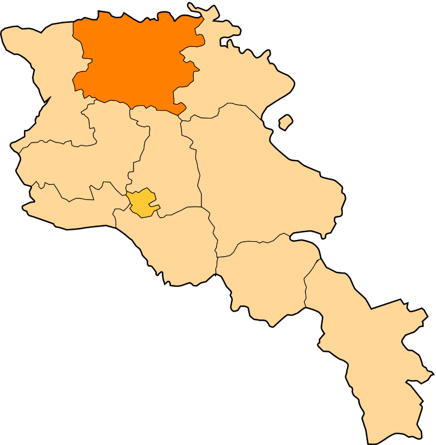

Հետ գնալ
Լոռու մարզ
Լոռու մարզ, մարզի կարգավիճակ ունեցող վարչատարածքային միավոր
Հայաստանի հյուսիսում։
Զբաղեցնում է պատմական Հայաստանի Գուգարաց նահանգի արևելյան հատվածն ու Այրարատ նահանգի Նիգ գավառի հյուսիսային
տիրույթները։
Ներկայիս վարչատարածքային միավորը ձևավորվել է Հայկական ԽՍՀ-ի մաս կազմող Թումանյանի, Գուգարքի, Սպիտակի, Ստեփանավանի և
Կալինինոյի
շրջանների միավորման հետևանքով՝ ՝ 1995 թվականի բարեփոխումների արդյունքում։
Լոռու մարզի խոշոր բնակավայրերն են՝
Լոռու մարզի տարածաշրջաններն են՝
- Գուգարք
- Թումանյան
- Սպիտակ
- Ստեփանավան
- Տաշիր